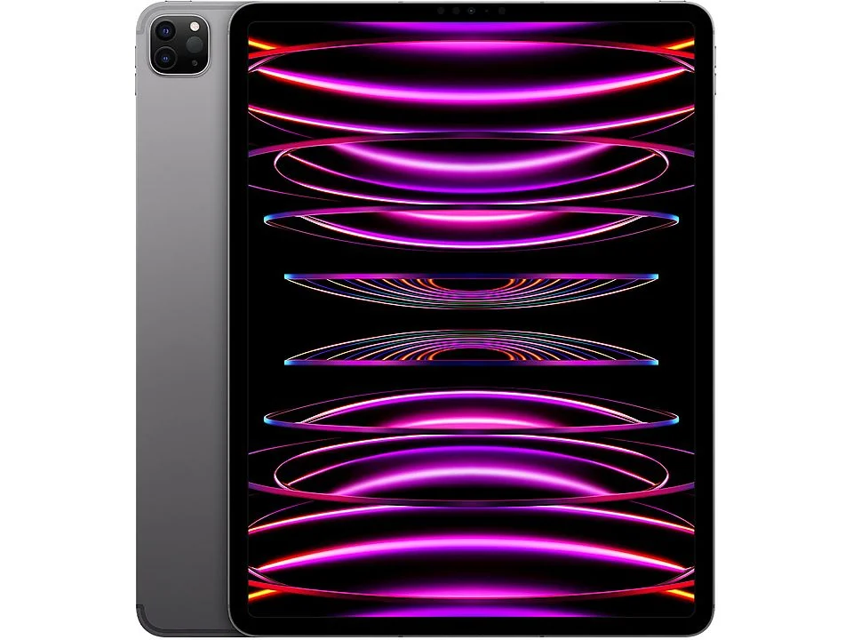

iphone ipad e Airpods un trio inseparabile.

1399,9€
iPad Pro 12.9'' Chip M2 (6ª Generazione)
M2, performance di nuova generazione:
Chip M2. È la nuova generazione di chip Apple, con una CPU 8-core fino al 15% più scattante e una GPU 10-core per prestazioni grafiche fino al 35% più veloci. M2 mette il turbo al machine learning con un Neural Engine il 40% più rapido, e ha il 50% di banda di memoria in più: una potenza straordinaria che porta su iPad Pro performance e capacità mai viste prima. Potrai creare progetti 3D ultrarealistici, costruire complessi modelli in AR e immergerti in giochi con grafiche da console a frame rate ancora più elevati.
iPadOS, si aprono nuovi orizzonti:
Lavora con tutti gli optional. Con iPadOS 16 hai a disposizione strumenti potentissimi. Fai correre la tua creatività con app di livello desktop. Usa Stage Manager per ridimensionare e sovrapporre le finestre quando lavori su diversi progetti.
Foto e videocamere, obiettivamente, tutta un’altra storia:
Fotocamera frontale. iPad Pro ha un ultra-grandangolo frontale con sensore da 12MP e angolo di campo di 122°, ideale per fare foto e video da pubblicare sui social. Con la funzione Inquadratura automatica ti tiene sempre al centro della scena nelle chiamate FaceTime.
Specifiche
| Schermo | Processore | Ram | Connettività | Hard Disk |
|---|---|---|---|---|
| 12.9 pollici | Apple M2 | 8 GB | USB C | 128 GB |
| 2732 x 2048pixel | 8 core | Bluetooth 5.3 | Non estendibile | |
| 4:3 | Numero M2 | Wi-Fi IEEE 802.11a |

979€
Iphone 15
Dynamic Island su Iphone 15:
La Dynamic Island ti mostra notifiche e attività in tempo reale, così non ti perdi nulla: puoi vedere chi ti sta chiamando, sapere se il tuo volo è in orario e molto altro.
Design innovativo:
IPhone 15 ha un robusto design realizzato in vetro a infusione di colore e in alluminio. È a prova di schizzi, gocce e polvere. La parte frontale in Ceramic Shield è più forte di qualunque vetro per smartphone. E il display Super Retina XDR da 6,1" è fino a due volte più luminoso in pieno sole rispetto quello di iPhone 14.
Fotocamera da 48MP:
La fotocamera principale da 48MP scatta foto ad altissima risoluzione, per darti immagini splendide e incredibilmente dettagliate. E con il teleobiettivo 2x di qualità ottica è facile comporre l’inquadratura perfetta per i tuoi primi piani.
di nuova generazione:
Scatta ritratti ancora più dettagliati e con colori più intensi. Inoltre puoi spostare la messa a fuoco su un altro soggetto, anche dopo aver scattato: basta un tap.
Potentissimo chip A16 bionic:
Il chip ultraveloce permette funzioni evolute come la fotografia computazionale, le transizioni fluide della Dynamic Island, e la modalità “Isolamento vocale” per le chiamate. Ed è anche incredibilmente efficiente, così la batteria dura tutto il giorno.
Funzioni di sicurezza:
Se devi chiamare i soccorsi ma non c’è campo o non ci sono reti Wi-Fi disponibili, puoi usare SOS emergenze via satellite.4 E con Rilevamento incidenti, iPhone può riconoscere un grave incidente d’auto e chiamare aiuto se tu non puoi.
Pensato pensando a tutto:
iPhone ha funzioni che proteggono la tua privacy e ti aiutano a tenere sotto controllo i tuoi dati. È realizzato con ancora più materiali riciclati per ridurre al minimo l’impatto ambientale. E include di serie funzioni che lo rendono accessibile a ogni persona.
Specifiche
| Schermo | Processore | Ram | Connettività | Hard Disk |
|---|---|---|---|---|
| 6.1 pollici | A16 Bionic 6 Core | 6 GB | USB C | 128 GB |
| 1170x2532 pixel | A17 Pro 6 Core | 8 GB | 5G | 256 GB |
| Numero A16 o A17 | Wi-Fi IEEE 802.11a | 512 GB |

979€
AirPods 3ª Generazione
Bassi di altissimo livello:
Il driver dinamico progettato da Apple è potenziato da un amplificatore custom. Il risultato è un suono superdettagliato che ti fa apprezzare ogni minima sfumatura, con bassi profondi e alti cristallini.
Vento, fai silenzio:
In entrambi gli auricolari, un microfono rivestito da una speciale rete acustica riduce al minimo il rumore del vento durante le chiamate, così la tua voce arriva forte e chiara.
Un pizzico di controllo:
Il sensore di pressione ti dà ancora più controllo su quello che ascolti. Ti basta premere per far partire un brano, metterlo in pausa o passare a quello successivo, ma anche per rispondere a una chiamata e riagganciare.
Sintonia immediata:
Avvicina gli AirPods al tuo iPhone o iPad e tocca Connetti per abbinarli a tutti i dispositivi nel tuo account iCloud. Potrai rispondere a una chiamata sull’iPhone mentre ascolti musica sul Mac, senza dover cambiare dispositivo.
Specifiche
| Colore | Peso | Altezza | Larghezza | Profondità |
|---|---|---|---|---|
| Bianco | 0.038 kg | 4.43 cm | 5.35 cm | 2.13 cm |